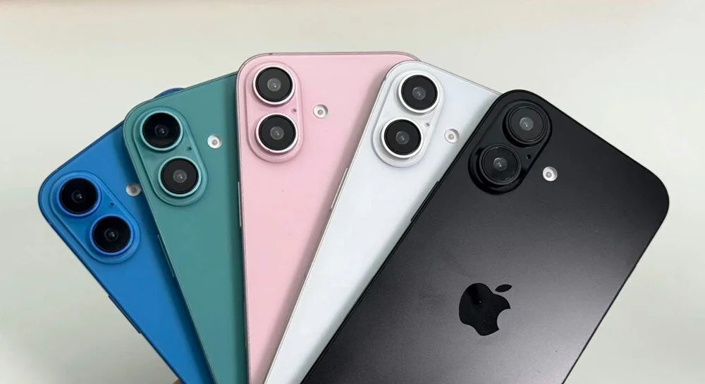

Yapay Zekanın Geleceği
Yapay zeka dünyası hızla değişiyor. Yeni gelişmeler ve uygulamalar hayatımızı nasıl etkileyecek?
Devamını Oku

Yeni iPhone Tanıtıldı
Apple'ın yeni amiral gemisi olan iPhone, kullanıcılar tarafından büyük ilgi gördü.
Devamını Oku
Giyilebilir Teknoloji İnovasyonları
Giyilebilir teknolojiler, sağlık sektöründen spora kadar geniş bir yelpazede devrim yaratıyor.
Devamını Oku